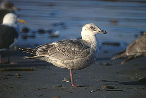
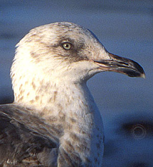

| These photographs accompany records that have been recently submitted to the committee. This record
has been ACCEPTED.  Slaty-backed Gull Larus schistasagus 5 Feb 95, Ventura Marina, VEN 1995-053 © 1995 Don DesJardin  Slaty-backed Gull Larus schistasagus 5 Feb 95, Ventura Marina, VEN 1995-053 © 1995 Don DesJardin Back to CBRC Rare Bird Photos |